1. The diagram below shows an equipment used to separate a mixture of solids.
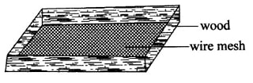
2. In which one of the following activities is the tool used properly?
3. The heat from a burning charcoal stove reaches the other parts of a room mainly by ?
4. Which one of the following characteristics is found in both tilapia and ducks?
5. Which one of the following statements is correct about water?
6. Which one of the following statements is TRUE about HIV and AIDS?
7. Which one of the following practices conserves water by using sparingly?
The following signs and symptoms were observed on a patient:
(i) Severe headache
(ii) Abdominal pain
(iii) Fever
(iv) Slight diarrhea with blood stains
(v) Sores in the mouth.
8. The patient is likely to be suffering from
9. Which one of the following attaches itself on the uterus wall to develop into a baby?
10. Which one of the following is NOT a reason for HIV testing?
11. The table below shows the results of an investigation done by pupils on floating and sinking.
12. Which one of the following parts of the human digestive system is correctly matched to its function?
13. The diagram below shows a certain animal parasite.
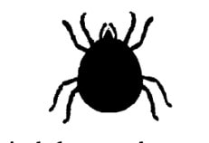
14. Which of the following is NOT advisable for a patient suffering from tuberculosis‘?
15. The diagram below demonstrates an experiment done by pupils to show a certain type of soil erosion. box
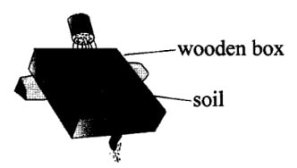
16. Which one of the following pairs of plants stores food in the root?
17. The diagram below represents the proportion of gases in air.
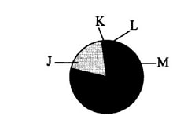
18. Which one of the following nutritional de?ciency diseases makes the face and limbs of a child to swell?
19. Which one of the following pairs consists only of sources of electricity?
20. Which one of the following levers has the effort between the fulcrum and the load when in use?
21. The chart below shows a simple classi?cation of animal feeds.
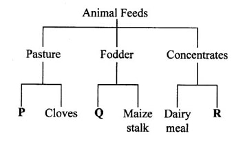
22. A plant has the adaptations below:
(i) thin cuticle
(ii) ?exible stems
(m) air sacs
(iv) waxy upper leaf surface.
The plant is likely to be a
23. Pupils put garden soil in a glass bottle containing Water, shook it and allowed it to settle. Which one of the following could NOT be determined by the experiment?
24. Which one of the following is a function of ?bre in the human diet?
25. Which one of the following pairs consists only of green plants?
26. The following are parts of a flower
(i) anther.
(ii) style.
(iii) ovary.
(iv) stigma.
Which pair of the plant parts is involved in pollination?
27. In an investigation, pupils placed a mirror in a basin containing water to direct light to a white wall. The pupils were investigating
28. Which one of the following groups of materials consists only of non-magnetic materials?
29. During an experiment pupils poured a certain amount of water into a container labelled S. They then transferred the same water into the containers labelled T and V. The pupils were investigating whether liquids
30. Pupils set up an experiment as shown in the diagram below.
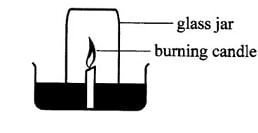
31. The diagram below represents a set—up used to demonstrate certain aspects of matter.
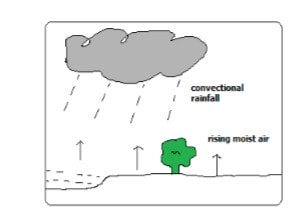
32. Which one of the following components of the environment will be least affected when an oil pipe bursts?
33. Pupils placed a bottle top on water and it ?oated. They then crushed and placed the same bottle top on the water again and it sunk. Which one of the following factors that affect sinking and ?oating was being investigated?
34. The diagram below represents a single ?xed pulley in use.
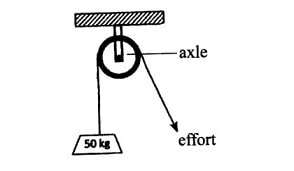
35. The diagram below illustrate balancing against one.
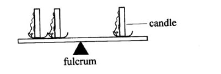
36. Which one of the following methods of food preservation is NOT modern?
37. Which type of manure is common on dairy farms?
38. During digestion, the following activities occur in the mouth EXCEPT
39. Which one of the following pairs of diseases is the infant immunised against at birth?
40. Which one of the following teeth problems can be prevented by feeding on a balanced diet?
41. Which one of the following plants is a cash crop?
42. The chart below shows a weather record kept by pupils for five days.
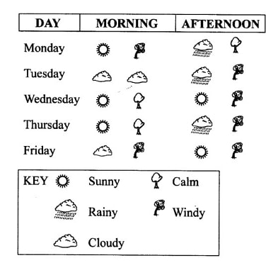
43. Below is an illustration of a food chain. Plant —> Antelope —> Lion —> Vulture Tertiary consumers are represented by
44. Which one of the following planets is closer to the sun?
45. The diagram below shows the human digestive system.
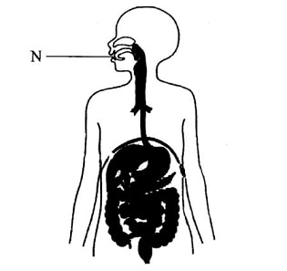
46. The table below shows the type and number of teeth in an adult human being.
Which of the following correcly resprerents E, F, G, H in that order?
47. The diagram below represents a mammalian heart.
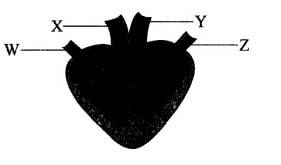
48. The diagram below shows components of human blood.
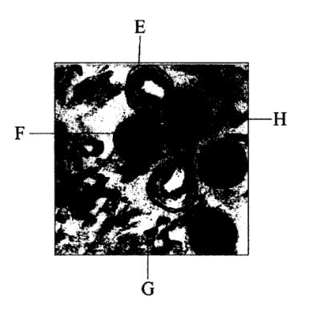
49. Which one of the following is NOT an excretory product in human beings?
50. Which one of the following is a function of the amniotic sac during pregnancy?